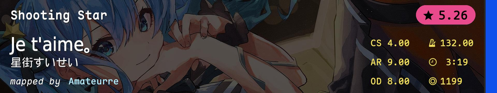
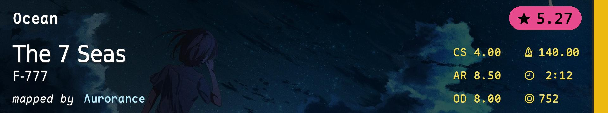
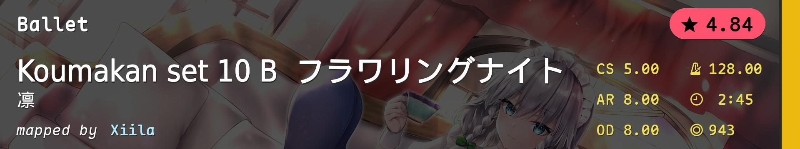
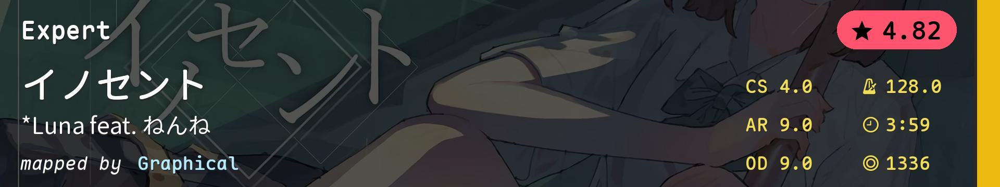
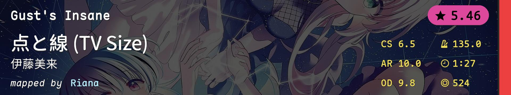
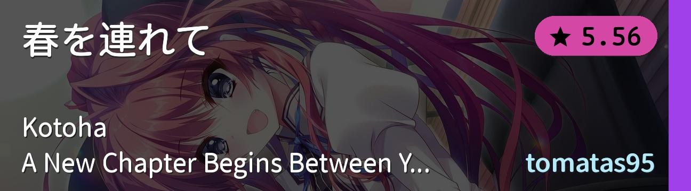
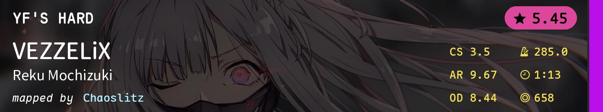
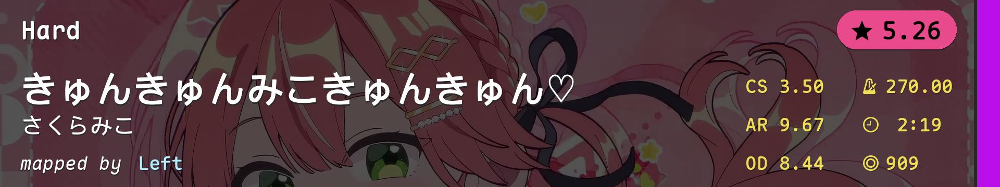

![Tennoji Rina (CV: Tanaka Chiemi) - Tsunagaru Connect (Mrgglock) [Let's Sing Our Emotions]](./模拟图池（6位数）.covers/1-3521055.jpg)
![Dustvoxx, Laur - FireLight (Neokontrol Remix) (OKSY) [Beelzebub]](./模拟图池（6位数）.covers/2-3122865.jpg)
![sajou no hana - Gray (TV Size) (tukamoto7km) [Insane]](./模拟图池（6位数）.covers/4-2724531.jpg)
![xi - Longinus (Anxient) [Insane]](./模拟图池（6位数）.covers/5-4379484.jpg)
![remixed celas - Legend of Seeker (Celine) [Insane]](./模拟图池（6位数）.covers/6-4570327.jpg)
![Emilia (CV: Rie Takahashi) - Stay Alive (TV Size) (Aranel) [Please don't go...]](./模拟图池（6位数）.covers/11-3211629.jpg)
![James Landino - Aresene's Bazaar (DeviousPanda) [Hard]](./模拟图池（6位数）.covers/15-4091821.jpg)
![Puru - Grimheart (Original Mix) (Necho) [Quantum Rosta's Tolerance]](./模拟图池（6位数）.covers/17-2140790.jpg)
![solfa - Battle 3: Shiryoku no Kagiri -The force of mortality- (Lasse) [Garden's Insane]](./模拟图池（6位数）.covers/18-4261144.jpg)
![Aice room - For U (Hinsvar) [Loving U]](./模拟图池（6位数）.covers/19-4220385.jpg)
![Kano - KANO 2020remix (LeCandy) [Delightful Dreams]](./模拟图池（6位数）.covers/20-3774013.jpg)
| # | BID | Beatmap Info | Mods | Notes |
|---|---|---|---|---|
| 1 | 3521055 | |
NM | 跳 |
| 2 | 3122865 | |
NM | 串 |
| 3 | 3253646 |  | NM | alt/tech |
| 4 | 2724531 | |
NM | tech |
| 5 | 4379484 | |
NM | 高速串 |
| 6 | 4570327 | |
NM | 节奏/读谱/手控 |
| 7 | 3764198 |  | HD | 三连音aim |
| 8 | 3604159 |  | HD | AR8 SL0 |
| 9 | 4049848 |  | HD | 手控/间距串 |
| 10 | 4345735 | HR | 综合 | |
| 11 | 3211629 | |
HR | 小圈 |
| 12 | 4348879 |  | HR | aim/flow |
| 13 | 4207810 |  | DT | 超简单的常规 |
| 14 | 3896623 |  | DT | 高速切 |
| 15 | 4091821 | |
DT | AR10手控切 |
| 16 | 4521732 |  | DT | 谁说DT好刷pp？ |
| 17 | 2140790 | |
FM | 算是常规 |
| 18 | 4261144 | |
FM | antimod |
| 19 | 4220385 | |
FM | 大圈 |
| 20 | 3774013 | |
TB | 耐力 |